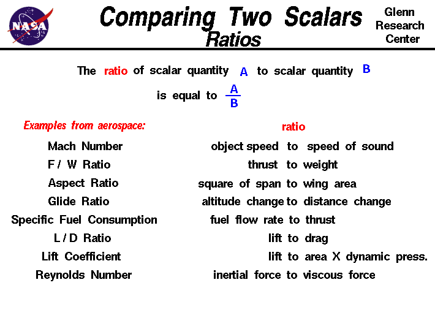

|

Math and science were invented by humans to describe and
understand the world around us.
We observe that there are some quantities and processes in
our world that depend on the direction in which
they occur, and there are some quantities that do not depend
on direction. For example, the
volume
that an object occupies in space
does not depend on its direction.
If we have a 5 cubic foot block of iron and we move it up and down and
then left and right, we still have a 5 cubic foot block of iron.
On the other hand, the
location,
of an object does depend on direction.
If we move the 5 cubic foot block 5 miles to the
north, the resulting location is very different than
if we moved it 5 miles to the east.
Mathematicians and scientists call a quantity
which depends on direction a
vector quantity
and a quantity
which does not depend on direction is called a scalar quantity.
Vector quantities have two characteristics, a magnitude and a direction;
scalar quantities have only a magnitude.
To better understand our world, engineers often compare scalar quantities
by using the ratio of the magnitude of the scalars.
Comparing
two vectors is more complex because you have to consider both magnitude
and direction.
The ratio of a scalar quantity a to
a scalar quantity b is equal to a divided by b.
ratio = a / b
Here are some simple rules for working with ratios that apply to all
scalar quantities:
-
If the value of the ratio is 1.0, then a = b .
-
If the value of the ratio is greater than 1.0, then a > b.
-
If the value of the ratio is less than 1.0, then a < b .
-
If the value of the ratio is nearly zero, then a is very much less than b
or a is nearly zero.
-
If the value of the ratio is very large, then
a is very much larger than b or b is nearly zero.
Here are some examples of ratios that are used in aerospace.
-
The
Mach number is the ratio of the speed of an
object to the
speed of sound in a gas. The Mach number defines
the various flight regimes of an aircraft and the importance of
compressibility of the flow.
-
The
thrust to weight ratio of a rocket
determines the
g-loading
on the payload and structure.
-
The
specific fuel consumption (sfc) for jet engines is the
ratio of the fuel flow rate to the amount of thrust produced. An
efficient engine has a low value of sfc and burns little fuel to
produce thrust. A similar parameter for rocket engines is the
specific impulse (Isp). The Isp is the ratio
of the thrust to the weight flow of the propellants burned. In this case, a
rocket with a high Isp is better than a low Isp because it produces more
thrust for equal propellant weight flow.
-
The
specific heat ratio is the ratio
of the specific heat at constant pressure to the specific heat at
constant volume. It is a property of a gas which appears in many
compressible flow equations. The value for air at standard conditions
is 1.4.
-
The
drag coefficient is a number which relates the
aerodynamic forces on an object to the
dynamic pressure times the
area
of the object.
-
The
Reynolds number is the ratio of the inertia forces
in a fluid to the viscous forces. This ratio appears in
boundary layer theory
and multiplies the viscous terms of the
Navier-Stokes Equations of fluid dynamics.
This is only a partial list of the many ratios which engineers use every day.
he engine
fuel/air ratio
and
compression ratio
help to determine engine performance.
Activities:
Guided Tours
Navigation ..


- Beginner's Guide Home Page
|